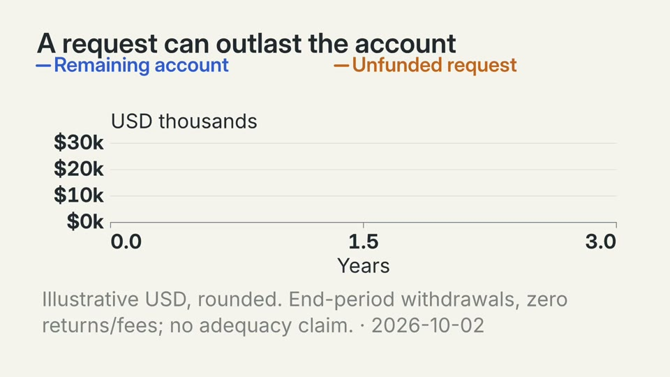
depleted-account-trace: first frame
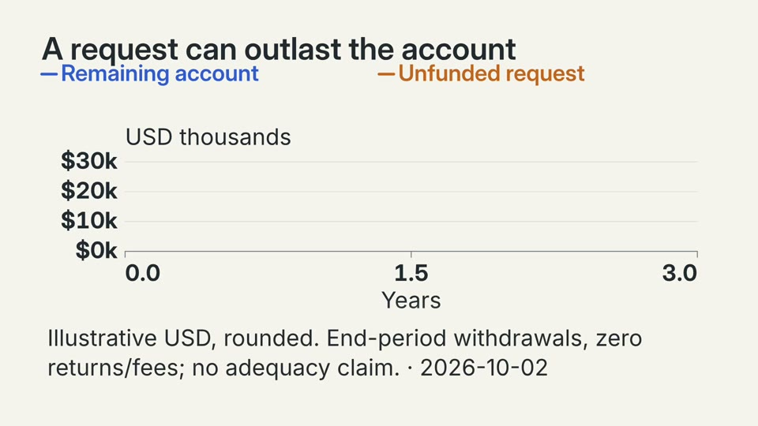
depleted-account-trace: entrance
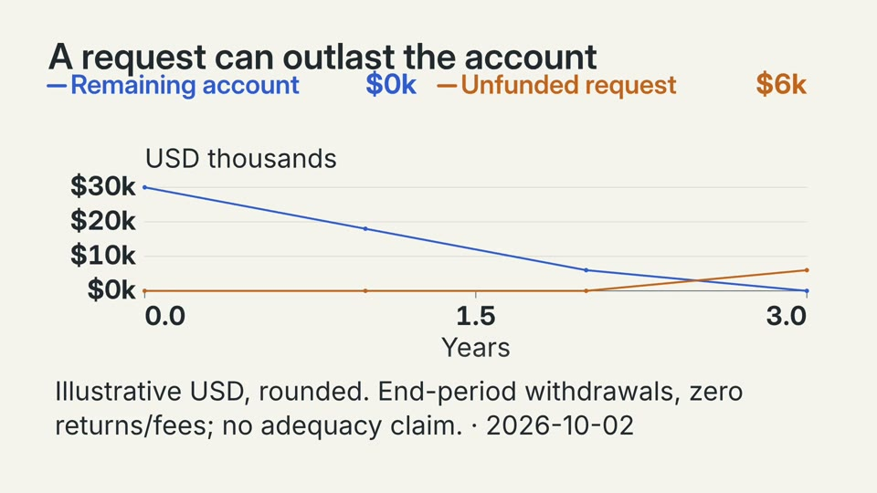
depleted-account-trace: last frame
Before depleted-account-payment
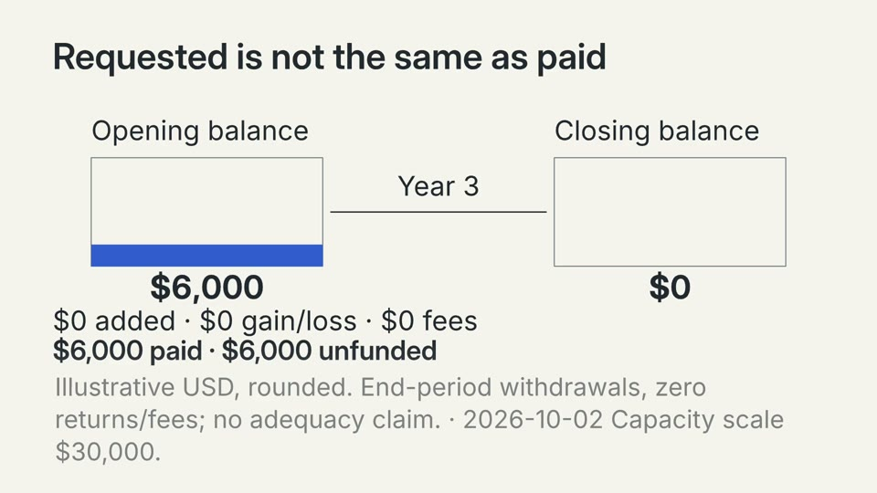
depleted-account-payment: first frame
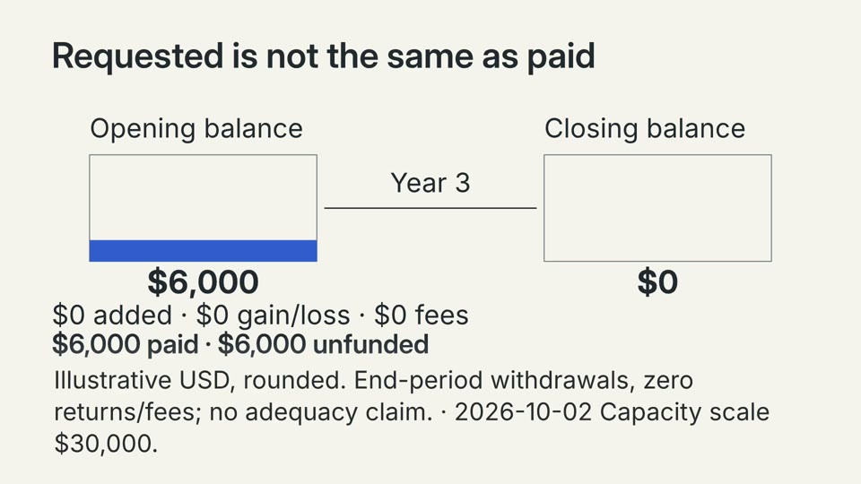
depleted-account-payment: entrance
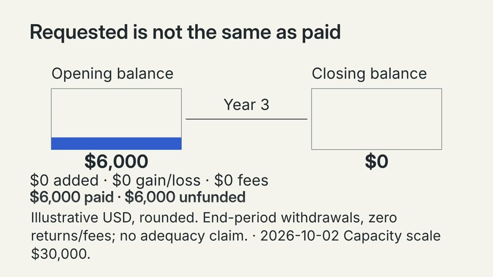
depleted-account-payment: last frame
Before funded-account-trace
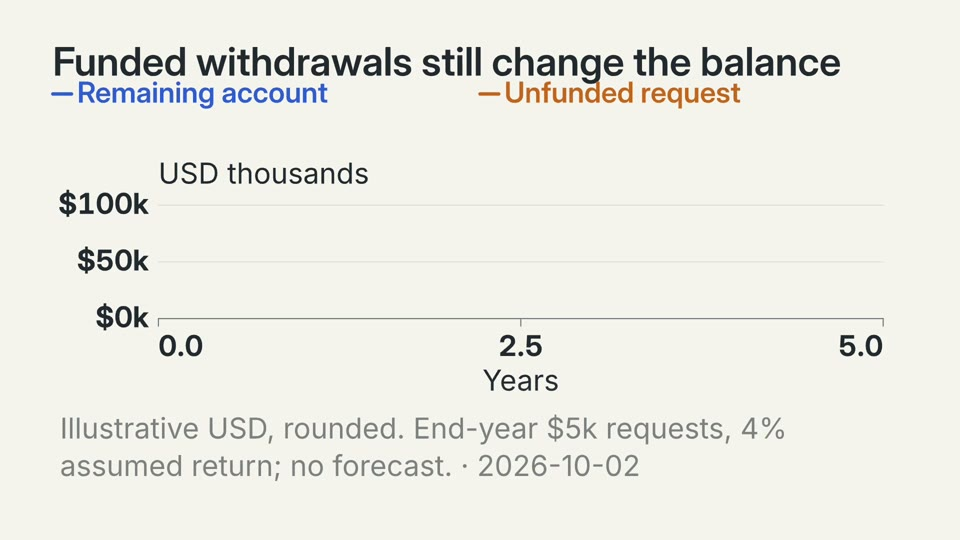
funded-account-trace: first frame
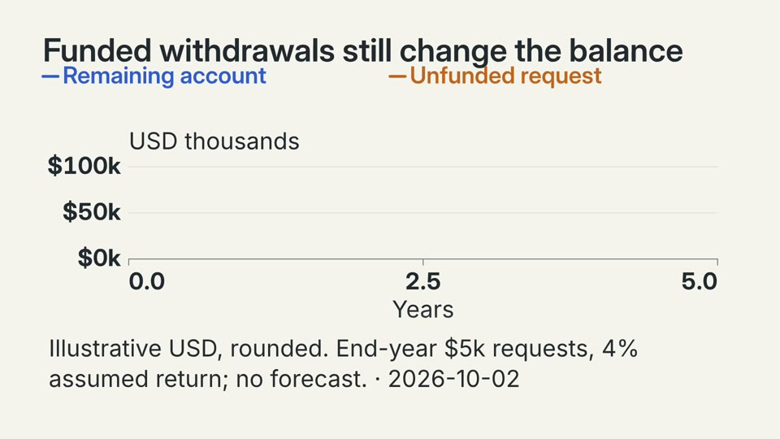
funded-account-trace: entrance
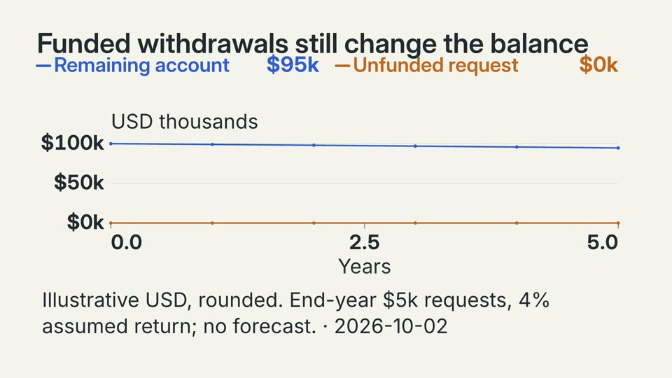
funded-account-trace: last frame
Before funded-account-payment
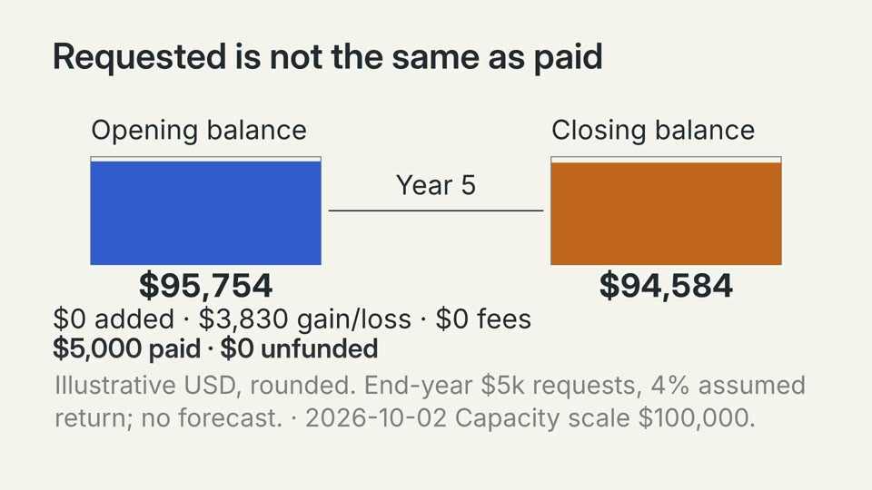
funded-account-payment: first frame
funded-account-payment: entrance
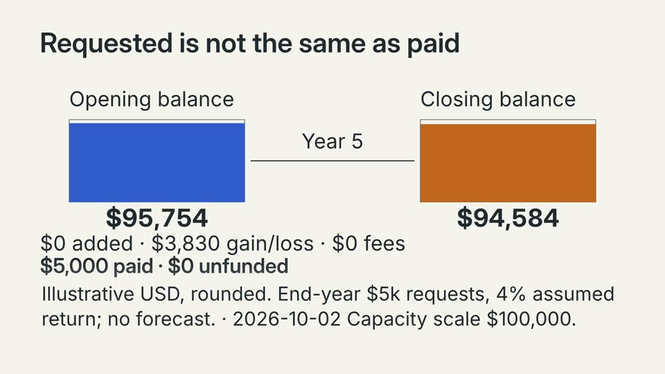
funded-account-payment: last frame